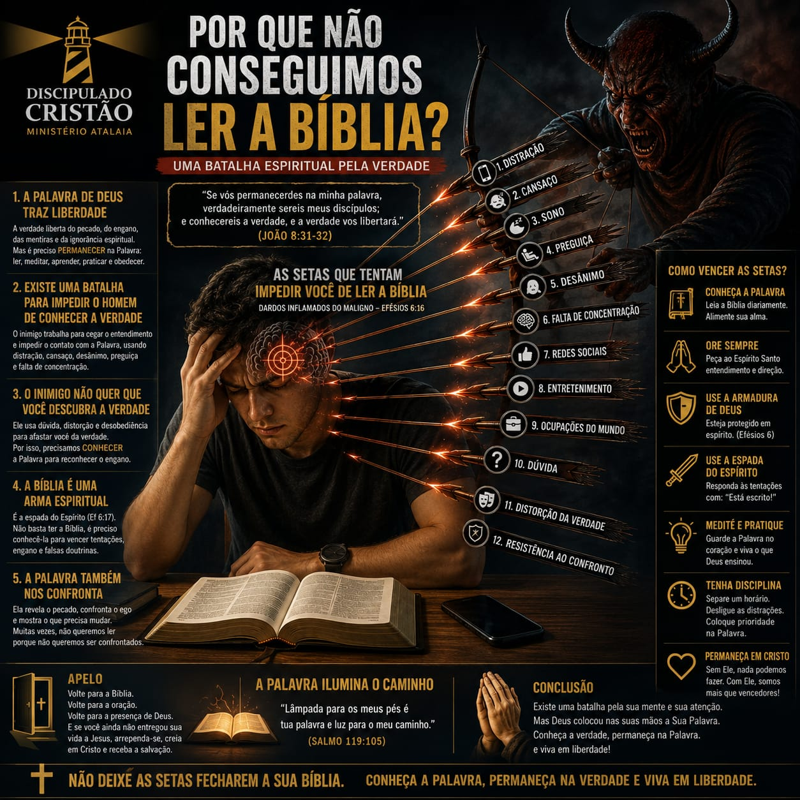
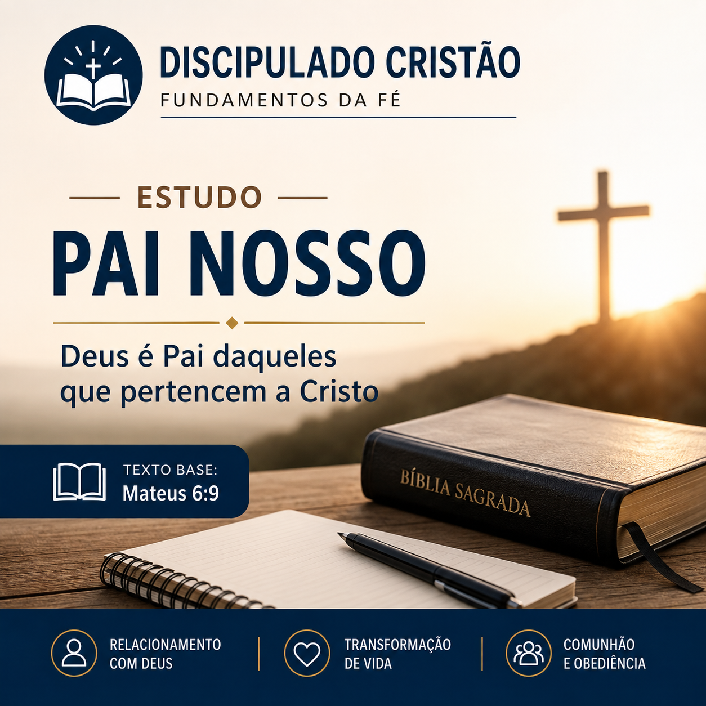
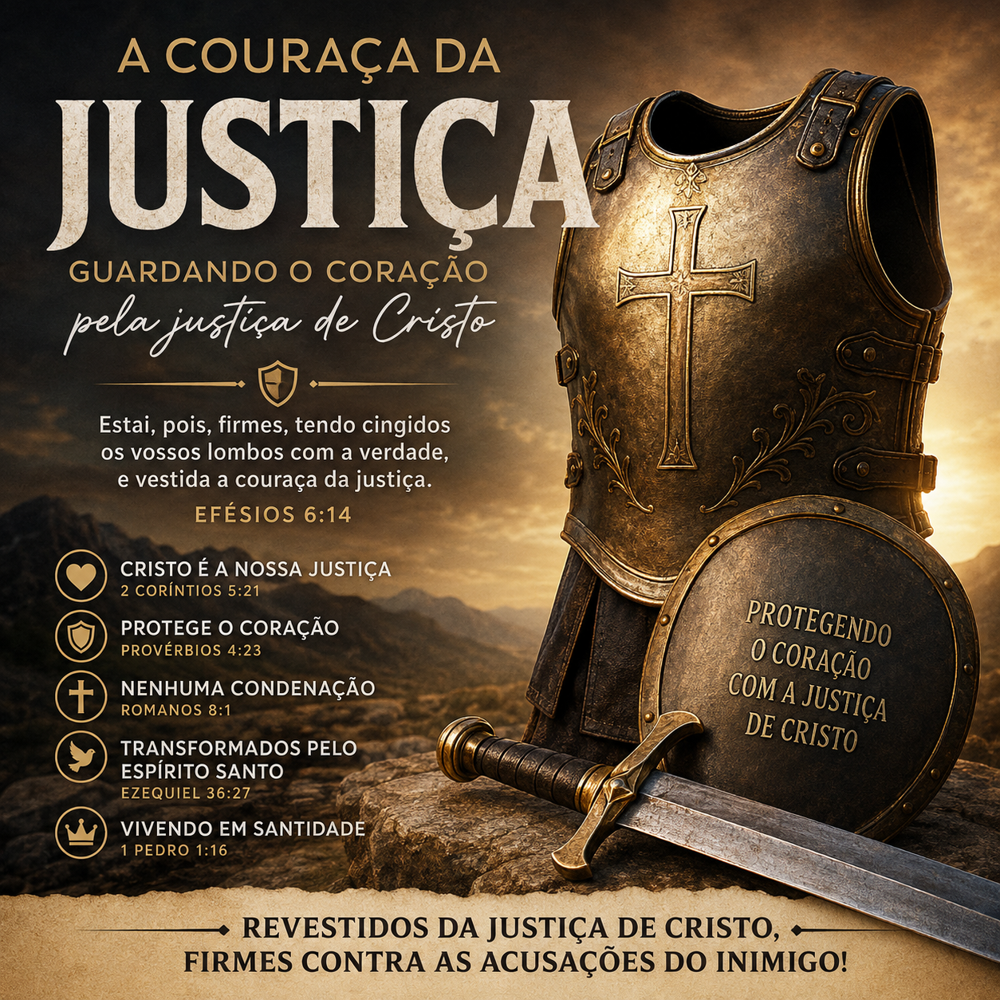
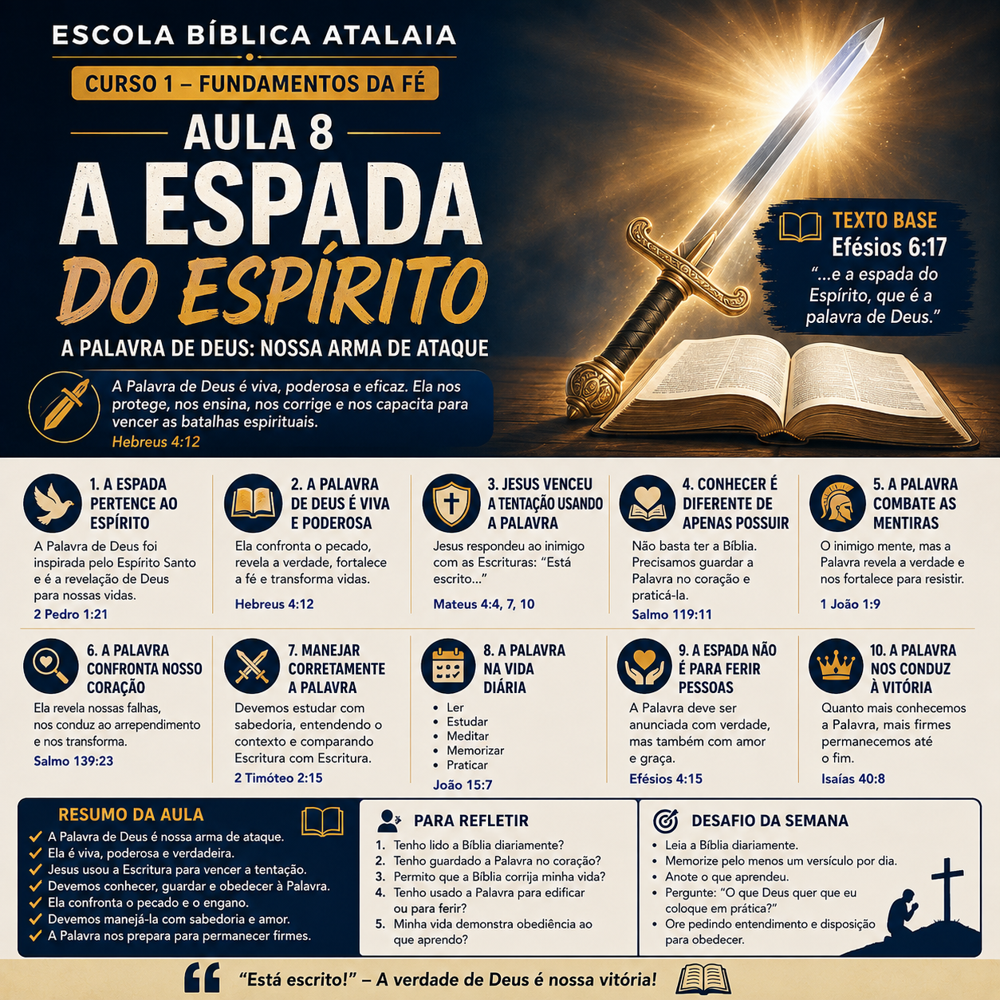

O que significa ser discípulo de Cristo
Referência Bíblica: Mateus 16:24
Ser discípulo de Jesus significa abandonar o antigo caminho, seguir seus ensinamentos e viver uma vida totalmente dedicada ao Reino de Deus.
Abrir PDF da LiçãoEste curso apresenta fundamentos bíblicos para formar discípulos comprometidos com Cristo, com a Palavra de Deus e com a missão do Reino.
Referência Bíblica: Mateus 16:24
Ser discípulo de Jesus significa abandonar o antigo caminho, seguir seus ensinamentos e viver uma vida totalmente dedicada ao Reino de Deus.
Abrir PDF da LiçãoReferência Bíblica: Lucas 9:23
O verdadeiro discípulo renuncia ao pecado e coloca a vontade de Cristo acima dos seus próprios desejos.
Abrir PDF da Lição
Referência Bíblica: Atos 3:19
O arrependimento envolve reconhecer o pecado, abandonar os caminhos errados e voltar-se para Deus.
Referência Bíblica: João 3:3-5
Compreenda o significado do novo nascimento, sua necessidade espiritual e a transformação realizada pelo Espírito Santo na vida daquele que crê em Jesus Cristo. Descubra por que ninguém pode entrar no Reino de Deus sem experimentar uma nova vida concedida pelo Senhor.
Abrir PDF do Estudo
Referência Bíblica: João 8:31-32
Um estudo sobre os principais obstáculos que dificultam a leitura da Bíblia e a importância de desenvolver uma vida constante de leitura, meditação e prática da Palavra de Deus.
Abrir PDF do EstudoReferência Bíblica: Mateus 4:4
Um estudo sobre a necessidade de alimentar diariamente a vida espiritual com a Palavra de Deus. Aprenda como a falta de alimento espiritual enfraquece a alma e como desenvolver uma vida constante de leitura da Bíblia, oração e comunhão com Deus.
Abrir PDF do Estudo
Referência Bíblica: 2 Timóteo 3:16-17
A Palavra de Deus ensina, corrige e prepara o discípulo para viver de acordo com a vontade do Senhor.

Referência Bíblica: Josué 1:8
O discípulo não apenas conhece a Palavra, mas coloca seus ensinamentos em prática diariamente.
Abrir PDFReferência Bíblica: João 17:17
Descubra como a Palavra de Deus transforma o caráter do cristão, conduz à santidade e fortalece a vida espiritual. Jesus declarou: "Santifica-os na verdade; a tua Palavra é a verdade."
Abrir PDF do Estudo
Referência Bíblica: João 1:12
Descubra como alguém se torna filho de Deus por meio da fé em Jesus Cristo, compreenda o significado do novo nascimento e conheça as evidências de uma vida transformada pelo Espírito Santo.
Abrir PDF do Estudo
Referência Bíblica: Mateus 6:9
Compreenda o significado de chamar Deus de Pai, descubra o que significa pertencer a Cristo e conheça as características de uma vida transformada pela fé, pelo arrependimento e pela obediência a Deus.
Abrir PDF do Estudo
Referência Bíblica: Efésios 2:10
O discípulo demonstra sua fé através de atitudes de amor, serviço e obediência a Deus.
Abrir PDF
Referência Bíblica: João 8:31-32
Aprenda por que permanecer na Palavra de Deus é essencial para o crescimento espiritual, o verdadeiro discipulado e a liberdade que somente Cristo pode oferecer.
Abrir PDF do Estudo
Referência Bíblica: Mateus 6:6
A oração é uma comunhão íntima com Deus, onde o discípulo busca conhecer a vontade do Senhor e fortalecer sua fé.

Referência Bíblica: Mateus 6:9-13
Jesus ensinou que a oração deve reconhecer a grandeza de Deus, buscar seu Reino e apresentar nossas necessidades.
Abrir PDF da LiçãoReferência Bíblica: Salmo 51:12
Descubra como Deus restaura a alegria da salvação quando há arrependimento sincero. Aprenda que a verdadeira alegria nasce da comunhão com o Senhor e que Sua graça renova a fé, fortalece o coração e sustenta aqueles que permanecem em Sua presença.
Abrir PDF do Estudo
Referência Bíblica: 1 Pedro 1:15-16
Deus chama seus discípulos para viverem uma vida diferente, separada das práticas pecaminosas do mundo.

Referência Bíblica: Provérbios 9:10
O temor de Deus conduz o discípulo à sabedoria, reverência e obediência.
Abrir PDFReferência Bíblica: Marcos 7:20-23
Descubra que a verdadeira contaminação do ser humano nasce no coração. Aprenda como Jesus revela a origem do pecado, a importância de guardar os pensamentos e permitir que o Espírito Santo transforme o interior, produzindo uma vida de santidade e obediência a Deus.
Abrir PDF do Estudo
Referência Bíblica: Isaías 59:2; Romanos 3:23; Isaías 53:5
Compreenda a diferença entre pecado, transgressão e iniquidade, como essas realidades afastam o ser humano de Deus e de que forma Jesus Cristo, por meio de Sua morte na cruz, oferece perdão, restauração e transformação para todo aquele que crê.
Abrir PDF do Estudo
Referência Bíblica: 1 Coríntios 10:13
O discípulo vence o pecado através da Palavra, oração e dependência do Espírito Santo.
Abrir PDFReferência Bíblica: João 16:11
Descubra por que Jesus declarou que o príncipe deste mundo já está julgado. Compreenda a derrota definitiva de Satanás, a vitória de Cristo na cruz e o chamado de Deus para abandonar o pecado, viver em santidade e permanecer firme no Evangelho.
Abrir PDF do Estudo
Referência Bíblica: João 14:26
O Espírito Santo é o Consolador enviado por Cristo para ensinar, fortalecer e guiar seus discípulos.

Referência Bíblica: Gálatas 5:22-23
O Espírito Santo produz no discípulo características semelhantes ao caráter de Cristo.
Abrir PDF
Referência Bíblica: Provérbios 15:3
Descubra como a presença e o olhar de Deus alcançam todas as coisas. Aprenda a viver com integridade, santidade e fidelidade, sabendo que o Senhor conhece o coração e recompensa aqueles que permanecem fiéis.
Abrir PDF do Estudo
Referência Bíblica: Hebreus 11:1
A fé é a confiança em Deus e em suas promessas, mesmo quando ainda não vemos aquilo que esperamos.

Referência Bíblica: 2 Coríntios 1:20
O discípulo aprende a permanecer firme, confiando que Deus é fiel em todas as suas promessas.
Abrir PDF da Lição
Referência Bíblica: Romanos 8:37–39
Descubra por que a vitória do cristão não depende da ausência de dificuldades, mas da presença constante de Cristo. Aprenda que nada pode separar aqueles que creem do amor de Deus revelado em Jesus Cristo.
Abrir PDF do Estudo
Referência Bíblica: Atos 2:42
O discípulo cresce espiritualmente através da comunhão, ensino da Palavra e relacionamento com outros irmãos.

Referência Bíblica: 1 Coríntios 12:27
Todo discípulo recebe dons e talentos para servir e edificar a Igreja de Cristo.
Abrir PDF
Referência Bíblica: Efésios 5:22-33
Deus estabeleceu a família como uma instituição de amor, cuidado, compromisso e aliança.

Referência Bíblica: Provérbios 22:6
Os pais têm a responsabilidade de ensinar os caminhos do Senhor às próximas gerações.
Abrir PDFReferência Bíblica: Mateus 28:19–20
Compreenda a Grande Comissão deixada por Jesus à Sua Igreja. Descubra que fazer discípulos vai além de anunciar o Evangelho: significa ensinar a Palavra, formar vidas transformadas e viver como testemunha fiel de Cristo em todas as nações.
Abrir PDF do Estudo
Referência Bíblica: Atos 1:8
O discípulo testemunha através de suas palavras, atitudes e transformação de vida.
Abrir PDF
Referência Bíblica: Romanos 8:29
O propósito do discipulado é formar discípulos semelhantes a Jesus em atitudes, pensamentos e comportamento.

Referência Bíblica: Filipenses 2:5-7
Jesus é o maior exemplo de humildade e serviço. O discípulo deve seguir seu exemplo.
Abrir PDF
Referência Bíblica: Tiago 3:11-12
Aprenda que a boca revela o estado do coração. Descubra como Cristo transforma nossa vida para que nossas palavras sejam instrumentos de edificação, verdade, amor e santidade, refletindo o caráter de um verdadeiro discípulo.
Abrir PDF do Estudo
Referência Bíblica: Efésios 6:10-18
Descubra como Deus fortalece Seus filhos para vencer as batalhas espirituais. Conheça o significado do cinturão da verdade, da couraça da justiça, do escudo da fé, do capacete da salvação, da espada do Espírito e da importância da oração constante para permanecer firme contra as ciladas do inimigo.
Abrir PDF do EstudoReferência Bíblica: Efésios 6:14
Descubra por que o cinturão da verdade é a primeira peça da Armadura de Deus e como a verdade de Cristo sustenta a vida do cristão. Aprenda a vencer os enganos do inimigo, permanecer firme na Palavra de Deus e viver com sinceridade, integridade e fidelidade ao Evangelho.
Abrir PDF do Estudo
Referência Bíblica: Efésios 6:14
Aprenda como a couraça da justiça protege o coração das acusações do inimigo e fortalece o cristão para viver em santidade. Descubra que a verdadeira justiça vem de Cristo e como permanecer firme na batalha espiritual revestido da graça de Deus.
Abrir PDF do EstudoReferência Bíblica: Efésios 6:15
Descubra o significado dos pés calçados com a preparação do Evangelho da paz e aprenda como Deus fortalece Seus servos para permanecerem firmes na caminhada cristã, vivendo em obediência e anunciando as Boas-Novas da salvação a todos os povos.
Abrir PDF do EstudoReferência Bíblica: Efésios 6:16
Compreenda o significado do escudo da fé apresentado por Paulo como parte da Armadura de Deus. Aprenda como a fé protege o discípulo diante dos dardos inflamados do maligno e fortalece o cristão para permanecer firme no Senhor.
Descubra que a fé não significa ignorar as dificuldades, mas confiar em Deus mesmo diante das lutas, dos medos, das dúvidas e das circunstâncias adversas. O discípulo é chamado a levantar o escudo da fé e permanecer firme na verdade da Palavra de Deus.
Abrir PDF do EstudoReferência Bíblica: Efésios 6:17
Aprenda como o capacete da salvação protege a mente do cristão e fortalece sua esperança em Cristo. Descubra a importância de renovar a mente pela Palavra de Deus, rejeitar pensamentos contrários à verdade e permanecer firme na esperança da salvação.
Abrir PDF
Referência Bíblica: Efésios 6:17
Aprenda como a Palavra de Deus é apresentada como a Espada do Espírito, a arma que fortalece o cristão diante das batalhas espirituais. Descubra a importância de conhecer, estudar, memorizar, obedecer e manejar corretamente as Escrituras, seguindo o exemplo de Jesus ao responder às tentações com a Palavra de Deus.
Abrir PDFReferência Bíblica: Efésios 6:10-18
Aprenda a importância da oração como parte essencial da Armadura Espiritual de Deus. Compreenda que o discípulo precisa permanecer fortalecido no Senhor, revestido de toda a armadura de Deus e vivendo em constante comunhão com Ele.
Este estudo apresenta a relação entre a oração, a vigilância e a perseverança. Descubra por que Paulo orienta o cristão a orar em todo o tempo no Espírito, a permanecer vigilante e a interceder por todos os santos.
Abrir PDF do Estudo
Referência Bíblica: 2 Timóteo 2:2
Todo discípulo maduro deve ensinar outros e participar da formação de novos discípulos.

Referência Bíblica: Marcos 10:45
A verdadeira liderança cristã é baseada no amor, cuidado e serviço ao próximo.
Abrir PDFReferência Bíblica: João 3:16
Compreenda a realidade da eternidade, o problema do pecado, o amor de Deus demonstrado em Jesus Cristo e a salvação oferecida pela fé. Este estudo apresenta a vida eterna como a esperança daqueles que creem em Cristo e são chamados a viver preparados para a eternidade.
Abrir PDF do EstudoReferência Bíblica: Romanos 8:22; Mateus 24:7-8
Um estudo sobre os acontecimentos que marcam o período que antecede a volta de Cristo. Compreenda o significado das dores de parto mencionadas por Jesus, o gemido da criação descrito por Paulo e o chamado à vigilância e preparação para a vinda do Noivo.
Abrir PDF do EstudoReferência Bíblica: Mateus 25:1-13
Um estudo sobre a parábola das dez virgens e o chamado de Jesus à vigilância e preparação para Sua volta. Compreenda a diferença entre as virgens prudentes e insensatas, a importância de manter a lâmpada preparada e a necessidade de viver em comunhão com Deus enquanto aguardamos a chegada do Noivo.
Abrir PDF do Estudo
Referência Bíblica: João 14:1-3
O discípulo vive esperando a promessa da volta de Jesus Cristo.

Referência Bíblica: Apocalipse 21:1-4
A esperança final do discípulo é viver eternamente com Deus em um novo céu e uma nova terra.
Abrir PDFAcesse os conteúdos complementares do Discipulado Cristão.